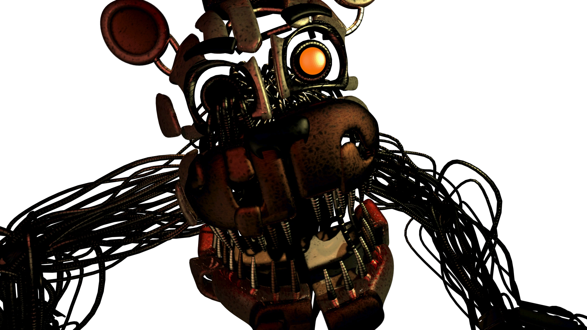
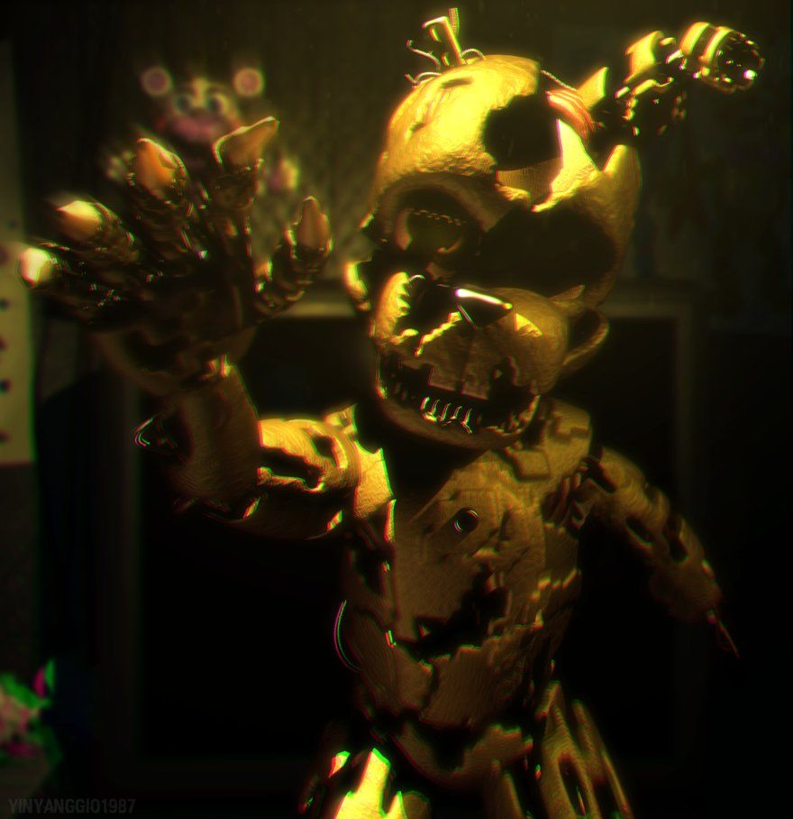
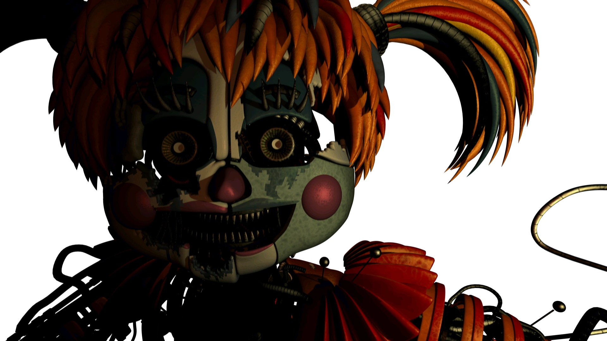
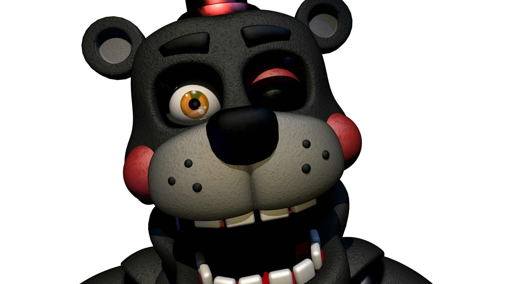
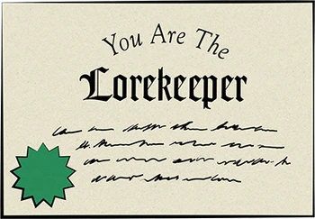
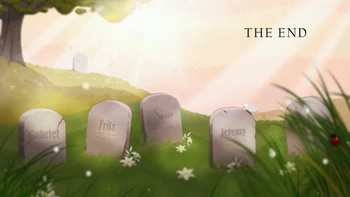
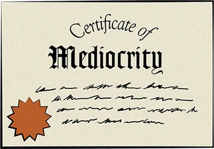
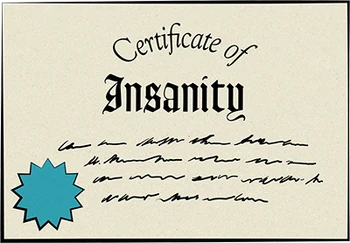
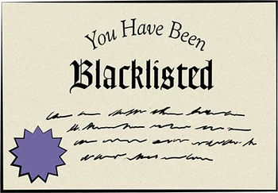

Freddy Fazbear's Pizzeria Simulator é um jogo independente de terror de sobrevivência de apontar e clicar desenvolvido por Scott Cawthon e o sexto episódio da série Five Nights at Freddy's. O arquivo de dados salvos do jogo é intitulado FNAF6, confirmando que ele se enquadra na programação canônica de jogos, e é a sequência de Five Nights at Freddy's 3, sendo cronologicamente o sexto jogo da série.
Como o título sugere, o foco principal deste jogo é administrar uma pizzaria e garantir que seja um ambiente seguro. Não fazer isso pode resultar em processo e possivelmente risco de falência se for processado muitas vezes. A verdadeira jogabilidade do jogo, porém, após terminar sua pizzaria, obriga o jogador a ficar sentado em um escritório até a hora de fechar para se defender dos animatrônicos resgatados que se escondem lá dentro enquanto terminam suas tarefas.

Gameplay
Ao iniciar o jogo, o objetivo exige que o jogador encha sua pizzaria com itens de um catálogo que reflita atmosfera, segurança, entretenimento e receita de bônus. O jogador também deve evitar itens com risco de responsabilidade civil para evitar ações judiciais, conforme descrito na Unidade Tutorial .
O jogador então entra em um escritório escuro com um computador na frente e duas aberturas de ventilação à esquerda e à direita. O objetivo desta parte do jogo é completar todas as tarefas listadas no computador.
Se o jogador salvou um animatrônico ou se houver algum solto, o jogador também deve tentar impedir que o animatrônico chegue ao escritório.
Isso é feito desligando o computador e o ventilador, mas também fará com que a temperatura suba. Se a temperatura no escritório atingir 120° Fahrenheit, o jogador desmaiará. Ligar o computador e o ventilador diminui a temperatura, mas causa ruído, alertando os animatrônicos do escritório.
Caso o jogador aceite algum acordo de patrocínio, anúncios também podem aparecer, fazendo mais barulho.
Se um animatrônico estiver em uma saída de ar, o jogador pode apontar sua lanterna para dentro da saída de ar. Há também áudio que o jogador pode usar para atrair os animatrônicos para fora do escritório. Ao finalizar as tarefas, o jogador deve desconectar o computador para completar a noite.
Entre as noites, o jogador será presenteado com um animatrônico que foi encontrado em um beco. O jogador terá a opção de salvar o animatrônico ou colocá-lo de volta no beco.
Salvar o animatrônico renderá um bônus de receita. Jogar o animatrônico de volta no beco não renderá nenhum bônus, mas o animatrônico não ficará solto na pizzaria. Ao resgatar um animatrônico, eles devem se certificar de que o animatrônico não chegue muito perto, ou ele irá assustá-los e a receita do bônus será perdida. O jogador pode usar um taser para colocar o animatrônico de volta em uma posição estável, mas usá-lo mais de três vezes diminui o valor residual do animatrônico. Junto com a nova versão de Baby, os seguintes animatrônicos que podem ser recuperados incluem um Funtime Freddy mutilado , um Springtrap auto-reparado e um misterioso urso preto .

Animatronics
molten Freddy
Molten Freddy é um dos quatro animatronics principais de Freddy Fazbear's Pizzeria Simulator e um dos animatronics salváveis do jogo. É uma versão destruída de Funtime Freddy com, presumidamente, o endoesqueleto de Ennard.
Scraptrap
William Afton, também conhecido como Scraptrap é um dos quatro principais antagonista em Freddy Fazbear's Pizzeria Simulator e um dos quatro animatrônicos salváveis do jogo.
Scrap Baby
Scrap Baby é uma dos quatro principais antagonistas de Freddy Fazbear's Pizzeria Simulator e uma dos animatrônicos salváveis do jogo. Ela é uma versão destruída de Circus Baby, após ser expelida de Ennard. Ela pode ter sido expulsa de Ennard após Descobrirem que Circus Baby está querendo ajudar seu pai.
Lefty
Lefty é um dos quatro principais antagonistas de Freddy Fazbear's Pizzeria Simulator e um dos animatrônicos salváveis do jogo. Ele também está disponível para ser comprado e colocado na pizzaria do jogador, estando disponível no catálogo "Rare Finds Auction" por um preço de $5.
Finais

O Final Bom, também chamado de Final Conclusão e Final Verdadeiro, é desbloqueado se o jogador salvar todos os animatrônicos salváveis nas seções de salvamento (ou então se ele consegui-los escondidos em itens do catálogo).

O certificado de Lorekeeper (que pode ser traduzido livremente como "Guardião da História") é o único certificado que não é obtido em um final, entretanto ele altera o Final Bom. Para conseguir este certificado, o jogador deve cumprir as seguintes ordens: Completar o minigame secreto do item Midnight Motorist. Completar o minigame do item Fruity Maze (jogá-lo e vencê-lo três vezes). Completar o minigame do item Security Puppet (até aparecer a garotinha do bracelete verde). Após cumprir esses requisitos, automaticamente o certificado de Lorekeeper aparecerá no canto inferior direito do menu principal.

Ao completar o Final Bom, uma imagem de um cemitério com seis lápides será mostrada após os créditos do jogo. Apesar de não ser possível ver os nomes em duas dessas lápides (uma porque está distante e a outra porque possui gramas tapando o nome), as demais apresentam os seguintes nomes: Gabriel, Fritz, Susie e Jeremy. A frase The End pode ser vista no canto superior direito da imagem.

O Final Medíocre é desbloqueado se o jogador não investir em nada na pizzaria, ou seja, se ele não comprar nada no catálogo que aumente o nível de avaliação da pizzaria (Faz-Rating). Ao terminar o último dia, um vídeo da Unidade Tutorial será mostrado. Nele, a Unidade Tutorial, de maneira sarcástica, parabeniza o jogador pela sua administração preguiçosa, e o despede da pizzaria. Posteriormente, o jogo será reiniciado. O Certificado da Mediocridade estará visível no canto esquerdo do menu principal.

O Final Insanidade é desbloqueado após descobrir a gravação secreta do Cara das Fitas e um conjunto de blueprints ocultos. Para conseguir isso, o jogador deve comprar o item Egg Baby (Data Archive) e colocá-lo na pizzaria no Modo Blueprint. Durante as tarefas diurnas, o jogador perceberá que a luz verde que indica que o monitor está ligado passará a ficar azul. O jogador então deve desligar o monitor, posicionar a seta do mouse sobre a luz azul (que estará apagada) e após um tempo ligá-lo novamente. Então, blueprints do Scooper da Sala do Scooper, de um simulador remoto, e de Lefty serão mostrados no monitor, enquanto o Cara das Fitas irá fazer um discurso, comentando que ele ajudou a construir os animatronics originais e que "ele" (presumidamente William Afton) os usou para cometer ações bárbaras. O Cara das Fitas diz também que irá juntá-los em um único lugar para colocar um fim no que "ele" começou. Ele também diz que, quando tudo isso acabar, ele poderá "dormir". Logo após, outro vídeo da Unidade Tutorial será reproduzido. Nele, ela dirá que o jogador foi despedido porque "sabia demais" e viu algo que não deveria ter visto. Ela entrega a ele o Certificado de Insanidade, para que ninguém acredite no que o jogador disser. Este certificado estará visível no canto inferior esquerdo do menu principal.

O Final Lista Negra é desbloqueado se o jogador completar a semana com um valor muito elevado de "Risco de Responsabilidade", ou seja, se ele tiver itens muito perigosos na pizzaria. Normalmente, para conseguir este final, a pizzaria deve ter mais de 50 pontos de Risco de Responsabilidade. Para conseguir o final, o jogador deve dar preferência aos itens em liquidação, que apresentam uma qualidade muito baixa e até a possibilidade de um animatronics salvável estar escondido no item, tornando a sobrevivência do jogador nas tarefas diurnas ainda mais complicada. Quando ele terminar a semana, outro vídeo da Unidade Tutorial será reproduzido. Nele, o jogador será repudiado pela sua negligência e pela sua despreocupação com a segurança dos clientes. Ele então receberá o Certificado da Lista Negra, que poderá ser visto no canto superior direito do menu principal.

O Final Falência é desbloqueado quando o jogador perde todo o seu capital e entra em falência com o saldo negativo. A única maneira de conseguir isso é com os processos judiciais, onde o jogador terá a opção de pagar ou adiar o pagamento. Se o jogador selecionar uma opção cujo custo é maior do que o seu saldo, ele entrará em falência. Quando isso ocorrer, outro vídeo da Unidade Tutorial será reproduzido. Nele, a Unidade Tutorial irá expulsar o jogador da pizzaria, dizendo que "reconhece uma causa perdida quando vê uma". Inesperadamente, o jogo será fechado, e ao iniciá-lo novamente, o minigame "troll" 2D poderá ser jogado novamente, como se fosse a primeira vez que o jogador abre o jogo. Após a conclusão deste final, o Certificado da Falência estará visível no canto direito do menu principal.